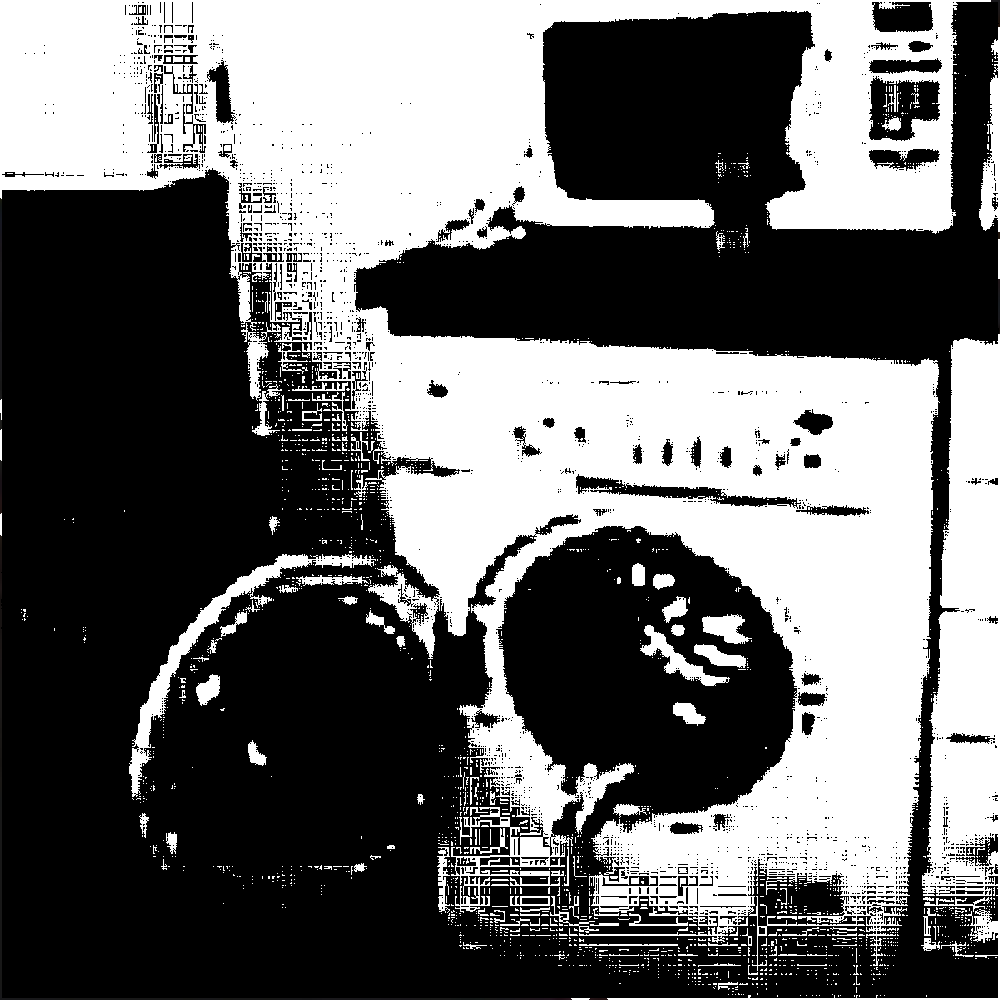

Any information outside of this article directly mentioning RSE-000 is to be completely censored, while information referring to the existence of RSE-000 is to be greatly altered. Any information relating to RSE-000 is considered a serious hazard to anyone outside of Level 5 Clearance. This article’s existence serves as a reminder to RSE higher ups, who are unfortunately not immune to RSE-000-1. See description for more information.
|  |
|---|
| An image believed to be RSE-000 which appeared for only fourteen milliseconds on a camera feed in Location 03 |
RSE-000 is a sentient, psychic and highly dangerous LG brand high-efficiency washing machine. Its exact origins are unknown, and is theorized to have been around as long as the creation of Earth, but is almost certainly responsible for the creation of all other AOC specimen, including RSE-010, who was created in 1333.
RSE-000’s main method of killing is unknown, as multiple different processes have been observed. RSE-000 is responsible for multiple plague outbreaks that occurred before the 15th century, as well as possibly pulling the asteroid that wiped out the dinosaurs 65 million years ago towards Earth. RSE-000 is believed to have become dormant in the year 1352 after a great war against humanity alongside other AOC members.
On December 1 of each year, any subjects who are aware of RSE-000’s existence inexplicably forget about it. This event has come to be classified as RSE-000-1, and is believed to be caused by massively scaled delta waves emitted by RSE-000 in its dormancy. Level 5 Clearance personnel are to carefully plan for this event weeks in advance - see Protocol LW-ALPHA in Containment Procedures for more information.
RSE-000’s exact location is unknown, both to RSE personnel and other AOC members, however it is believed to be located in the vicinity of Location 03. Due to this, several protocols have been planned over decades in the case of RSE-000 becoming active once again.
Protocol LW-ALPHA involves the posting of fliers regarding RSE-000 around Level 5 Clearance office spaces to remind them of RSE-000’s existence once RSE-000-1 occurs. This is to be carried out three days in advance. After personnel are reminded of the threat of RSE-000, the fliers are to be taken down and quickly disposed of, likely through incineration.
Protocol LW-OMEGA is to be carried out in the case that RSE-000 becomes active once more. This event will likely be detected, as a large-scale earthquake is predicted to happen shortly after an RSE-000-1 event. In this case, All RSE specimen will be released from containment out into the public in hopes of an easier death rather than the endless years of torment that RSE-000 will cause. Any personnel lower than Level 5 Clearance will not be notified of this, but a statement will be released by multiple world leaders as soon as the protocol has begun.